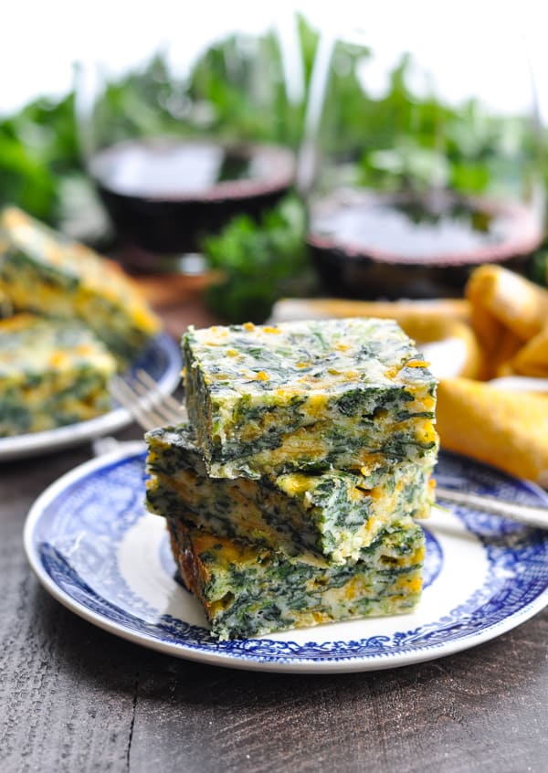

Spinach Squares

This is great in small squares as an appetizer, larger squares as a vegetable side dish, or meatless main course. Kids love them, and they freeze very well. To serve after frozen, defrost and reheat at 325° for 12 minutes. -Robin Listfield, Susan Kuhr
Yield: 40-60 squares
Assembly Time: 30 minutes
Cooking Time: 35 minutes
Equipment Needed: 9"x13"x2" pan
Ingredients:
- 4 tbsp butter or margarine
- 3 eggs
- 1 cup flour
- 1 cup milk
- 1 tsp salt
- 1 tsp baking powder
- 1 lb mild cheddar, grated
- 2 10-oz packages frozen chopped spinach, thawed and drained
- 1 tbsp chopped onion
Process:
- Preheat oven to 350°.
- Put butter in pan and melt in oven. Remove when melted.
- In a large bowl, beat eggs well, then add flour, milk, salt, and baking powder. Mix well.
- Add cheese, spinach, and onion. Again, mix well.
- Spoon mixture into baking dish and level off.
- Bake at 350° for 35 minutes.
- Remove and let cool, then cut into squares.